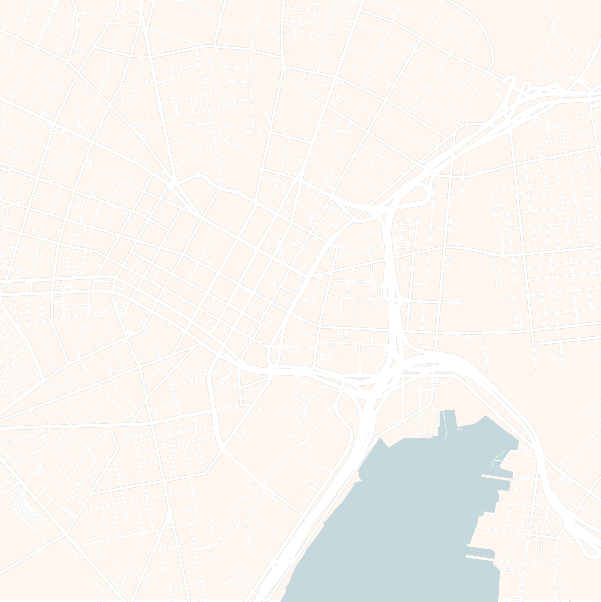
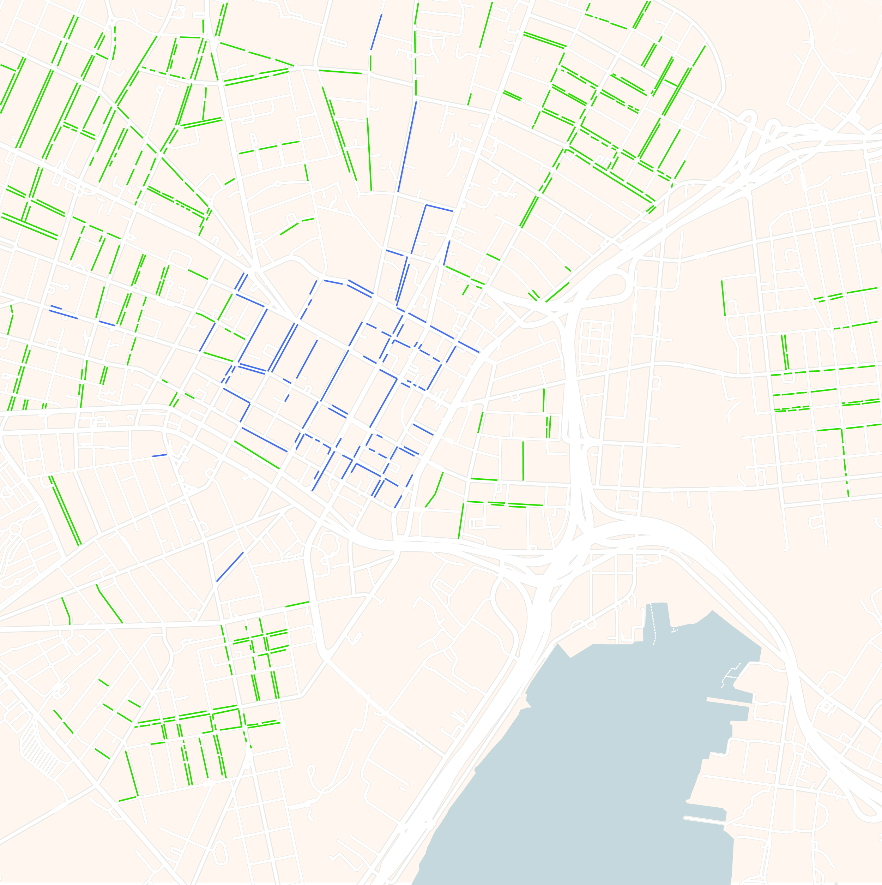
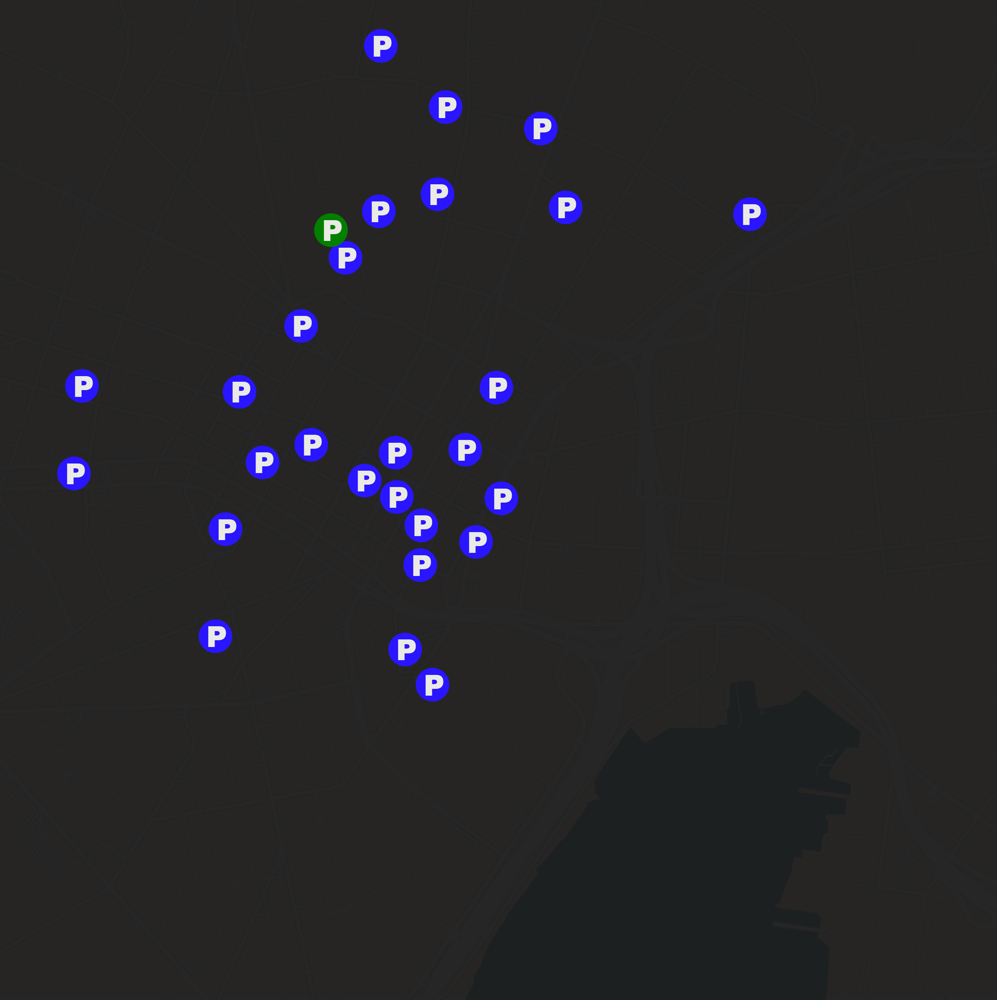

Chase Reynders



As a novice New Haven navigator, I was overwhelmed with how to make sense of it.
With so many twisting streets and an endless sea of parking rules and regulations, I was in over my head. Where could I find a new home for my dad's car? Where could the mini safely rest for an extended period of time?
I began foolishly, as one does. My search for the car's resting place was limited to ~25 parking garages.
The decision process was simple: was the garage near, walkable, or far?
And so it was all too easy to settle on the Crown Street Garage, a conveniently close location offering monthly parking passes. From my limited parking-world view, it seemed like a necessary cost!
That said, I didn't love it. So the search continued as the mini sat in the shade of Crown Street Garage for a month or so.
My next realization: the world of off-campus friends as instruments of personal parking gains. When I discovered Kennedy's driveway, it was as if I had struck gold.
I drooled at the thought of my dad's car sitting indefinitely in a nearby driveway FOR FREE!
There was one catch (as there always is): Kennedy has a car, too. As I was the guest-parker, I was responsible for nosing further into the driveway. He gave me a spare key to take care of car-shuffling...but at least it was still free...right?
I suppose free in one sense...
...but after you play car tetris for the 4th time in one week...
...you start to lose some sanity...
...and when you narrowly avoid dinging your friend's 15-year-old mini-van that drives like a boat...
...you start to wonder:
Is this really free? Or are we trading one cost for another?
I found myself daydreaming of Crown Street Garage's endless in-and-out privileges...
At least we can rest easy knowing
By this point, my 2-month cumulative parking knowledge was limited to ~26 discrete locations. It was time to level up...
...with help from a blessing from above
Introducing Spot Angels: a community-driven mapping app where users can report free and paid street parking options.
App users can click on each street annotation to understand their respective rules of the road.
And these annotations are updated in real-time by the community! As I dove into the platform, I noticed some especially active angels on the scene who were responsible for shedding light on much of the city's parking rules.
I was an especially big fan of Angel75805808...
...since they ended up blessing me with the knowledge of parking on Edgewood Avenue, across from Rainbow Park. It was here that I found an INFINITE PARKING GLITCH: totally free and unlimited parking allowed between November and April!!!
I found a cozy little infinite parking spot under a tree, and it was here the mini rested through the end of junior spring and into senior fall.
But as our parking saga has taught us, there is no free lunch. One fateful weekend while I was away, Angel75805808 decided to perform a whole bunch of divine interventions.
My infinite spot had been compromised!
I spent 30 minutes circling that block, shocked and dismayed as to how my precious parking glitch had been overtaken.
Eventually (and at the expense of Psychology class attendance), I was able to catch a car in transition and squeeze in thanks to my Bostonian parallel parking skills (please excuse my flex).
But what now? The mental load of street parking had just been raised by all the sudden Edgewood popularity, and with a mega-snow-storm on the way, I was once again in over my head.
I went back to the Spot Angels drawing board, but nothing made sense with an impending parking ban...
...it was around this moment that I harkened back to my humble beginnings.
In a time of immense Edgewood affinity, a once-in-a-decade blizzard, and too many finals to focus on car tetris, I reached back into the well of experience to find the right solution. Sometimes, the simplest tool is the best one for the job. Truly elite parking knowledge is knowing that life is not about finding free parking at the expense of your sanity – it's knowing when to spend money so that finding a spot doesn't consume your world.
Coded with help from Claude Code. Basemap provided by Datawrapper. Maps made in Adobe Illustrator.